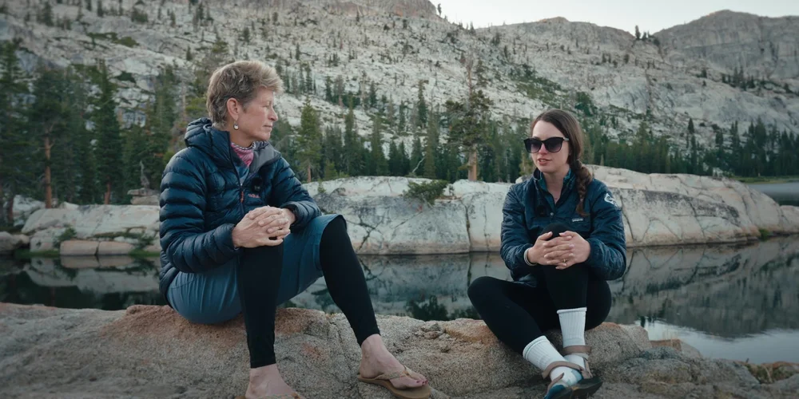
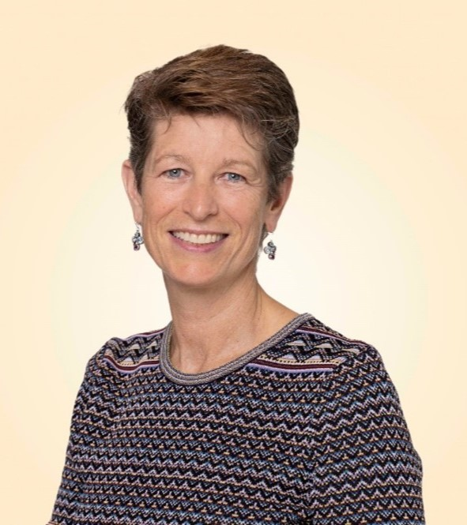

Physician-Scientist · Thru-Hiker · Advocate
Thirty years advancing cancer medicine.
2,650 miles on the Pacific Crest Trail.
About
Dr. Hege is a highly regarded physician-scientist with 30 years of experience in biopharma drug development and academic clinical medicine. She currently serves on the Board of Directors of Kelonia, EvolveImmune, and KSQ Therapeutics, and recently stepped down from director roles at Mersana and Adaptimmune following external acquisitions.
In addition, she serves as co-chair of the Biotech Committee and Women in Immunotherapy Network for the Society for the Immunotherapy of Cancer (SITC), along with advisory roles at cTRL, Moonlight, Dispatch, Neomorph, Kamau, Cartography, Shennon, Avemi, OverT, Waypoint, and Moderna.
Dr. Hege retired from her executive role at Bristol Myers Squibb in 2023 to pursue her lifelong dream of thru-hiking the 2,650-mile Pacific Crest Trail. In her BMS role as SVP Early Clinical Development, Hematology, Oncology & Cell Therapy, she was responsible for advancing a pipeline of small molecules, biologics, and cell therapies from first-in-human studies through clinical proof-of-concept. While there she led the 2Seventybio (formerly bluebird)-partnered BCMA CAR-T cell program (Abecma) in multiple myeloma from inception through FDA approval.
Prior to BMS she held a similar role at Celgene as well as executive R&D roles in biotech at Cell Genesys, Cellerant, and Theraclone. In addition, Dr. Hege spent nearly three decades as part-time clinical faculty in hematology at the University of California, San Francisco (UCSF), most recently as Clinical Professor of Medicine.
Dr. Hege has received numerous accolades including recognition by Forbes magazine as one of “50 Women Over 50: Entrepreneurs” and by UCSD with the Duane Roth Career Achievement Award for advances in science and medicine. She is passionate about advocacy for the advancement of women in science and medicine and has turned her PCT adventure into a fundraiser supporting leadership skills development for early-career women working in the field of cell and gene therapy.
Professional
Publications & Press
A 6-part series in Endpoint News exploring the surprising parallels between thru-hiking the Pacific Crest Trail and 30 years on the frontier of cancer drug development and leadership.
Read on Endpoint News → FeaturePenn Medicine Magazine on how a PCT thru-hike honoring her mother — the only woman to graduate from Penn Medicine’s class of 1953 — became a fundraiser for immunotherapy research.
Read at Penn Medicine → ProfileThe Female Scientist profiles a physician-scientist inspiring the next generation of women in medicine to draw strength from nature and time in the wilderness.
Read on The Female Scientist → ArticleOn leading wilderness retreats for college interns at Celgene and Bristol Myers Squibb — using backpacking as a forum for building confidence, resilience, and leadership skills.
Read on BizWomen → Long-Form InterviewA wide-ranging conversation on a 30-year career in cancer drug development, navigating the pandemic, and the profound power of wilderness to heal and transform.
Read the Interview → ConversationAn interview with a colleague on breaking down barriers to the advancement of women in science and medicine — lessons from the PCT applied to professional leadership.
Watch on LinkedIn → VideoHow challenges and misadventures in the wilderness build resilience and teach essential leadership skills — an early reflection that became the foundation for a new approach to leadership development.
Watch on YouTube →Creative Work

A documentary film following Dr. Hege’s 2,650-mile Pacific Crest Trail adventure and the fundraising effort it inspired — supporting leadership development for early-career women in cell and gene therapy. Premiering Fall 2026.
Dr. Hege’s PCT thru-hike became a fundraiser supporting leadership development for early-career women in cell and gene therapy — honoring her mother, the only woman to graduate from Penn Medicine’s class of 1953.
Visit Fundraiser PageKeynote Talk
Drawing on 30 years leading teams across biopharma and 2,650 miles on the Pacific Crest Trail, Dr. Hege’s keynote weaves together the surprising parallels between scientific discovery and wilderness exploration — offering hard-won lessons on resilience, adaptability, and leading with purpose through uncertainty.

For speaking inquiries, reach out at kristen.hege@gmail.com.
Get in Touch
For board inquiries, speaking engagements, media requests, or to learn more about Dr. Hege’s work, connect on LinkedIn.
View LinkedIn Profile